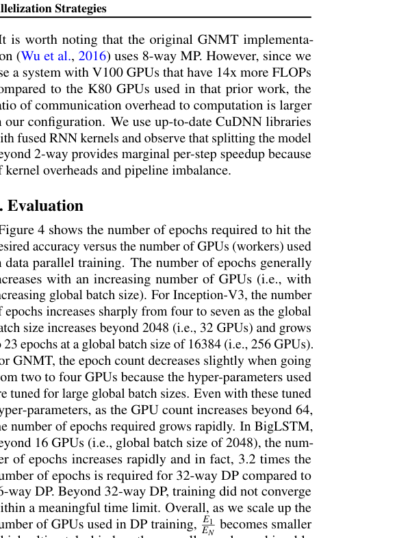
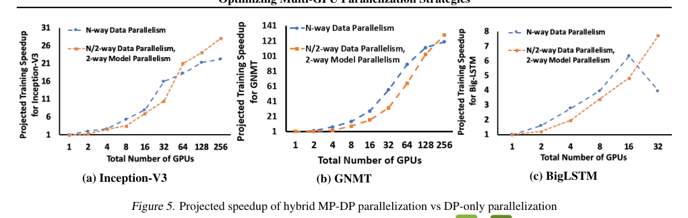
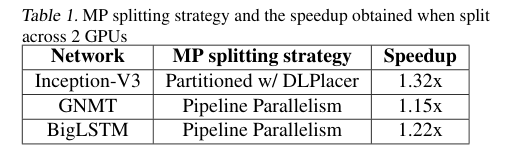
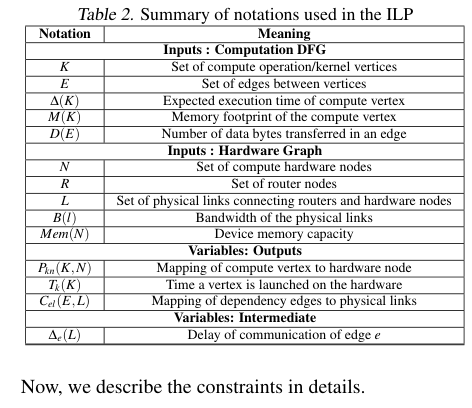
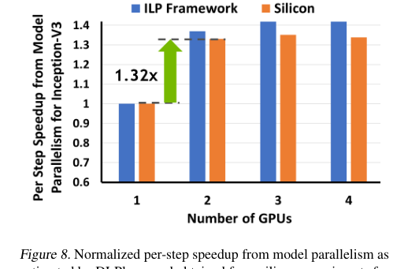

Saptadeep Pal, Eiman Ebrahimi, Arslan Zulfiqar, Yaosheng Fu, Victor Zhang, Szymon Migacz, David Nellans, Puneet Gupta · arXiv (Cornell University) · 2019 · 原文 · PDF
本文详细解读2019年发表的研究论文《Optimizing Multi-GPU Parallelization Strategies for Deep Learning Training》。
文章的核心主线是：在深度学习训练中，单独依靠“数据并行”向大规模集群扩展时，会遇到通信开销和“统计效率”下降的物理与算法瓶颈；为了突破这一限制，作者提出并量化分析了“混合并行（数据并行+模型并行）”策略。文章建立了一套严格的分析框架，用于寻找何时应该切换到混合并行的“交叉点”，并开发了一个基于整数线性规划（ILP）的底层软硬件协同布局工具（DLPlacer），以最大化模型并行的加速比，最终得出在特定网络下混合并行远优于纯数据并行的结论。
以下按逻辑顺序逐章节详细展开。
1. 引言 (Introduction) 与 2. 背景 (Background)
为了理解本文的系统全貌，首先需要建立深度学习分布式训练的基础概念体系。
【背景补充】深度学习（Deep Learning, DL）模型的训练过程通常包含前向传播（计算损失）、反向传播（计算梯度）和权重更新三个阶段。为了加速这一过程，需要将计算任务分配到多个计算设备（如GPU）上。
- 数据并行 (Data Parallelism, DP)：最常用的并行策略。在本文的定义中，每个计算设备（Worker）上都拥有一份完整且相同的模型权重副本，但各自处理数据集中不同且独立的子集。
- 微批次 (Mini-batch)：分配给单个设备在单次训练步骤（Step）中处理的数据样本量。
- 全局批次 (Global batch)：在数据并行中，所有设备在同一个训练步骤中处理的数据总量。全局批次大小 = 微批次大小 × 数据并行设备数。
- 同步随机梯度下降 (Sync-SGD)：本文关注的底层算法更新机制。所有设备计算完微批次的梯度后，必须通过 All-reduce（全归约） 这种集体通信协议将梯度在所有节点间共享并求平均，确保下一轮迭代前所有设备的模型参数绝对一致。
- 轮次 (Epoch)：所有训练数据被完整遍历一次的过程。
引发本文研究的问题背景：
当开发者不断增加设备数量（，原文未说明单位）以寻求数据并行的加速时，为了保证单块GPU的算力利用率，微批次大小通常保持不变，这就导致全局批次大小随着设备数线性增长。这带来了两个致命问题：
- 通信开销骤增：设备越多，All-reduce 梯度同步花费的时间越长。
- 统计效率 (Statistical Efficiency) 损失：随着全局批次过大，模型容易陷入局部最优或泛化能力变差，导致网络收敛到目标精度需要更多的轮次 (Epochs)。
为了解决纯数据并行的瓶颈，作者引入了另一维度的策略：
- 模型并行 (Model Parallelism, MP)：将模型的数据流图 (DFG, Dataflow Graph，表示计算操作及其数据依赖关系的有向图) 拆分到多个设备上。这些设备共同处理同一个微批次的数据。
- 流水线并行 (Pipeline Parallelism)：模型并行的另一种实现形式，将网络按层分组，放置在不同设备上，通过将微批次进一步切分为微小批次（Micro-batches）在设备间流水线执行。本文将其视为模型并行的一种特例。
本文核心思路：将数据并行（DP）与模型并行（MP）结合，形成混合并行 (Hybrid Parallelization)。即每个数据并行 Worker 不再是单张GPU，而是由多张GPU组成的一个模型并行集群。文章试图找到一个精确的临界点：在多少张GPU时，采用混合并行的端到端训练时间会短于纯数据并行。
3. 分解端到端训练时间 (Decomposing End-to-End Training Time)
本节作者通过数学建模量化了不同并行策略的端到端训练时间。
基础时间公式
端到端收敛时间 的基础公式如下：
- ：模型收敛到目标精度的总训练时间（标量，原文未说明单位），是最终的优化目标。
- ：每个训练步骤（Step）的平均执行时间（标量，原文未说明单位）。主要取决于硬件算力和计算图的执行效率。
- ：每轮次包含的步骤数（标量，原文未说明单位）。计算方法为数据集总样本数除以全局批次大小。
- ：收敛所需的目标轮次数（标量，原文未说明单位）。这是一个依赖于算法和超参数的量。
量化数据并行 (DP) 时间
当使用 个设备进行纯数据并行时，相比单设备训练，其加速比 （标量，无量纲，下标 表示使用的计算设备总数）推导如下：
- ：使用的计算设备总数（标量，正整数）。
- ：分别为单台设备运行时的步时间、每轮步数和收敛轮次（原文均未说明单位，下标 表示单台设备）。
- ：分别为 台设备运行纯数据并行时的对应量（原文均未说明单位，下标 表示 台设备）。
- (Scaling Efficiency, 扩展效率)：作者定义 （下标 表示 台设备）。由于梯度同步的通信开销， 总是大于 ，因此 始终小于等于 1。
- 由于 路数据并行的全局批次大小是单机的 倍，因此每轮步数 是 的 ，即 。
将上述代入，公式简化为：
这里明确揭示了纯数据并行的困境：当 很大时，通信开销导致 下降，同时大全局批次导致统计效率下降（收敛需要更多轮次，即 ，导致 下降），从而严重拖累整体加速比。
量化混合并行与策略选择
假设我们有 个设备可用（ 和 为正整数，原文未说明单位）。作者比较了两种利用这些设备的策略：
-
纯数据并行策略（ 路 DP）：
- ： 路纯数据并行的加速比（标量，原文未说明单位，下标 表示设备总数）。
- ：分别为 台设备运行纯数据并行时的扩展效率和收敛轮次（原文均未说明单位，下标 表示设备总数）。
(注：这里沿用了公式3的推导逻辑，只是将设备数换成了 )。
-
混合并行策略（ 路 DP，每个 Worker 使用 路 MP）：
在这种配置下，全局批次大小与 路纯 DP 相同（因为 个设备组成一个整体只处理一个微批次）。因此，收敛轮次仍为 。
- ：混合并行策略的总加速比（标量，无量纲，上标 表示每个数据并行 Worker 使用的模型并行设备数，下标 表示数据并行 Worker 的数量）。
- ：采用 个设备进行模型并行带来的单步时间加速比（标量，无量纲，上标 表示模型并行的设备数）。注意，作者指出原文中的符号 存在复用（后文 ILP 约束中 代表内存），此处 仅指代模型并行的设备数。
寻找最佳策略的临界点：
如果要求混合策略优于纯数据并行，即 ，代入公式得到：
推理链说明：这个不等式是本文最重要的理论结论。它表明，只要模型并行的加速比 () 能够抵消掉“因为纯粹扩展数据并行（扩至 ）所带来的通信效率下降（）和 统计效率损失（）”，那么混合并行就是更优的选择。
4. 方法论 (Methodology) 与 5. 评估 (Evaluation)
为了验证上述理论，作者进行了系统性测量。
实验对象与设定：
- 模型：Inception-V3 (图像)、GNMT (翻译)、BigLSTM (语言建模)。
- 硬件系统约束：NVIDIA DGX-1 服务器，包含 4 张 Tesla V100 GPU，通过高速互联总线 NVLink 连接。使用了 NCCL 2.0 库。
测量挑战与应对：
- 问题：物理系统只有 4 张 GPU，如何测量几百张 GPU 的收敛轮次（）？
- 方法：作者采用延迟梯度更新 (Delayed gradient update) 技术。例如，为了模拟 16 张 GPU 的全局批次，让 4 张物理 GPU 每张连续前向/反向传播 4 个微批次，在本地累加梯度，最后再进行一次 All-reduce 通信。这种软件层面的设定允许我们测量大规模集群的批次大小对统计效率的影响。
- 保守假设：对于无法在4卡物理机上测量的扩展效率（），作者做出了 （即假设通信开销为0）的最乐观估计。这是一个故意刁难混合并行的偏保守假设：如果在不考虑纯DP通信劣势的情况下混合并行依然胜出，那么在真实物理系统中混合并行的优势只会更大。
实验结果（结合图表）：
- 图 4 (Figure 4)：展示了通过延迟更新模拟出的结果。随着模拟 GPU 数量（全局批次）增加，三个模型收敛所需的轮次（Epochs）均出现了陡升。特别是 BigLSTM 在超过 16 张 GPU 后，轮次急剧增加。

Figure 4 · 原文 PDF 第 6 页
- 图 5 (Figure 5)：代入公式投射的最终加速比。
- Inception-V3 (图5a)：在 32 GPUs 之前，纯 DP 加速良好；超过 32 GPUs 后，纯 DP 由于收敛轮次激增导致加速饱和。此时，采用 2 路模型并行（）与 32 路数据并行的混合策略开始反超。到 256 GPUs 时，混合策略比纯 DP 快 26.5%。

Figure 5 · 原文 PDF 第 7 页
- 结论：实验清晰地证实了，当统计效率损失导致 DP 瘫痪时，结合哪怕加速比不高（如 Table 1 测量的 1.15x - 1.32x）的模型并行，也能在宏观系统尺度上带来显著的端到端收益。

Table 1 · 原文 PDF 第 7 页
6. 最大化模型并行性能 (Maximizing MP Performance)
上述分析表明，混合并行的成功极其依赖于模型并行的单步加速比 必须足够大。为了解决“如何将深度学习操作最优地放置在不同 GPU 上以最大化 ”的问题，作者开发了 DLPlacer 工具，这反映了深度的架构与 EDA (电子设计自动化) 协同思想。
作者将软件层的计算图映射问题，转化为类似 EDA 布图布线中的 整数线性规划 (ILP) 问题。这里的代价模型直接提取了微架构特征（如显存、FLOPs）和互联协议（带宽、延迟）。
输入参数 (如 Table 2 所示)

Table 2 · 原文 PDF 第 8 页
- 计算图 (Compute DFG) 输入：
- ：所有计算操作/内核节点的集合（原文未说明单位）。
- ：节点间数据依赖的边集合（原文未说明单位）。
- ：节点 的预期执行时间（标量，原文未说明单位）。【基于GPU标称TFLOPS和操作所需FLOPs分析计算得出】。
- ：节点 在特定批次下的显存占用（标量，原文未说明单位）。(注意：这里的 代表 Memory，与前面公式中的设备数 不同)。
- ：边 传输的数据量（标量，字节）。
- 硬件图 (Hardware Graph) 输入：
- ：计算硬件节点（如GPU）集合（原文未说明单位）。
- ：路由器/交换机节点集合（原文未说明单位）。
- ：连接路由器和硬件节点的物理链路集合（原文未说明单位）。
- ：物理链路 的带宽（标量，原文未说明单位）。
- ：设备显存容量（标量，原文未说明单位）。
输出与中间变量
- ：输出，二进制映射变量（原文未说明单位，下标 表示计算节点 到硬件节点 的映射）。如果在节点 上放置节点 ，则 。
- ：输出，节点 在硬件上启动的时间（标量，原文未说明单位，下标 表示计算节点）。
- ：输出，二进制变量，表示依赖边映射到物理链路（原文未说明单位，下标 表示边 到链路 的映射）。
- ：中间变量，边 通信所需的延迟（标量，原文未说明单位，下标 表示依赖边）。
核心 ILP 约束公式（系统必须满足的条件）
计算节点放置约束：
- 含义：每个计算操作 必须且只能映射到一个硬件节点 上。
激活数据路由约束（流守恒）：
其中 分别表示边 的源计算节点和目标计算节点， 表示硬件节点。 表示节点 和 之间的依赖边，下标 表示边的源节点和目标节点。 表示连接节点 和节点 的物理链路，下标 表示链路连接的两个节点。
(注：原文公式8中使用了非常规的书写 != 表示不等于，且求和底部的 表示“满足连接节点 和节点 物理链路条件的所有链路 ”。)
- 含义：如果一条边 的源计算节点 和目标节点 被放置在了不同的 GPU 上，那么必须在源节点和目标节点所在的硬件网络之间，准确分配一条出链路和一条入链路。
对于所有非源、非目的节点（包括交换机），确保路径连续：
其中 表示硬件节点或路由器节点。
- 含义：这是网络流中经典的流量守恒定律——对于途径的路由器节点，被分配用于该数据边的输入链路数必须等于输出链路数。
顶点调度约束（依赖与时序）：
其中 分别表示具有依赖关系的源操作和目标操作。
- 含义：目标操作 的开始时间，必须晚于等于源操作 的开始时间 + 源操作的执行时间 + 数据通过链路传输的时间 。这是物理因果律的体现。
通信延迟计算：
- 含义：传输延迟 = 数据量 / 链路带宽 + 链路基础延迟。(注：原文未定义/未说明 的具体含义)。
硬件资源争用约束（重叠约束）：
公式 (12) 包含一个逻辑判断，确保如果两个没有依赖关系的计算节点 （其中 ）落在同一个物理 GPU 上时（），必须串行执行，即一个操作的开始时间必须晚于另一个操作结束。作者在此处做出了一个编译器/库级别的重要假设：同一设备上的相邻操作是背靠背执行的，且通信与计算可以重叠。
设备内存容量约束：
- 含义：物理底线的限制。放置在单张 GPU 上的所有操作所需的峰值显存总和，不能超过该卡的物理显存容量 。
跨层接口与结果 (DLPlacer 效果)：
通过将硬件事实（NVLink 带宽、内存）输入 ILP 求解器，DLPlacer 输出了针对深度学习框架（TensorFlow tf.device()）的软件级布局方案。
在 图 8 (Figure 8) 中，作者展示了利用该工具在 Inception-V3 上找到的最优 2-GPU 布局，理论测算获得了 1.32 倍模型并行加速，而实际芯片运行测得的加速比与理论预测误差在 6% 以内。值得注意的是，2-GPU 的最优加速比几乎等同于 3 乃至 4 GPU 的上限，这暴露出该网络本身的内在并行度约束，这也进一步证明了引入这类自动布局工具代替人类手动猜测的必要性。

Figure 8 · 原文 PDF 第 10 页
7. 相关工作 (Related Work) 与 8. 结论 (Conclusion)
文章最后强调了现有框架在提取层内并行性（自动划分算子）方面的支持不足，这是推行此方法的现实局限性之一。
全文总结：
本文最初面对的问题是深度学习模型向大规模集群扩展时，纯数据并行遭遇的“收敛轮次增加”和“通信墙”双重瓶颈。作者通过理论推导证明，当全局批次大到破坏统计效率时，将可用机器用于进一步数据并行是不划算的；此时，必须转向“混合并行”策略，利用模型并行（MP）去分担设备的增长。为了确保模型并行这一环能够提供足够的加速底座以抵消通信效率的损耗，作者进一步构建了底层布局工具 DLPlacer，通过跨层的硬件建模约束，实现了近乎最优的图切分。
局限与警告：该模型极度依赖于计算图的可分割性（内在并行度）。对于像 Inception 这样拥有多分支的网络，ILP 切分效果良好；但对于完全串行且算子密集的架构，如果不借助库级别深度的流水线优化，很难获取足够的 来触发混合并行的收益交叉点。因此，不应将“混合并行必然优于纯数据并行”作为不附带条件的绝对真理推广，它严格受限于文中所述的跨层数学不等式成立与否。